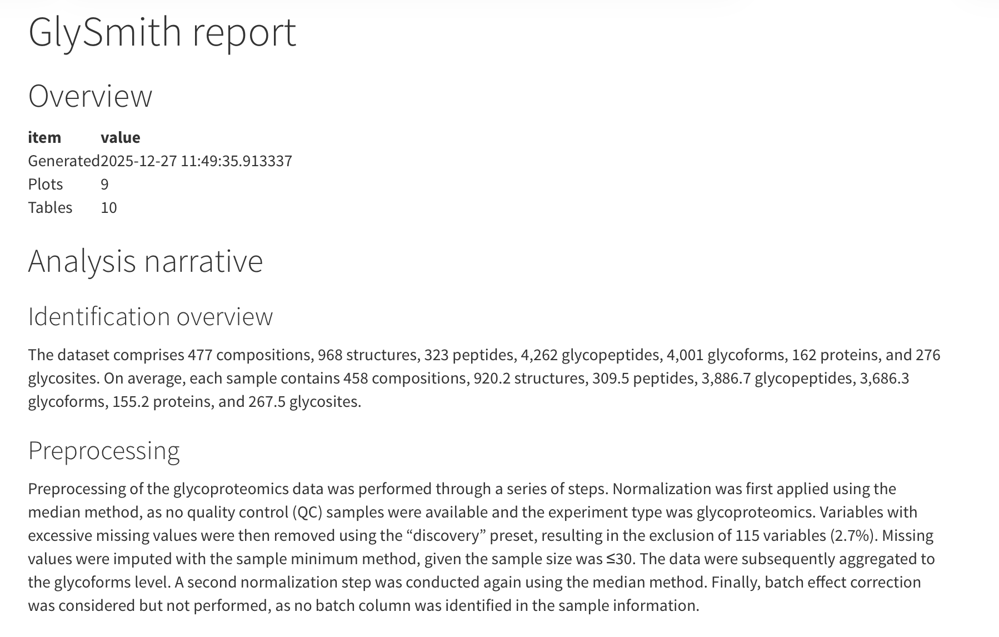

One Ring to rule them all. — The Lord of the Rings
Be overwhelmed by the complexity of glycoverse?
Imagine a package, performing all analysis you need, PCA, DEA, enrichment, or even advanced glycan derived trait analysis, in just one line of code.
Try glysmith! Perform the comprehensive analysis pipeline with one function call.
https://github.com/user-attachments/assets/d1eede5f-f919-428b-a5e8-574a8ab6f863
Installation
Docker (recommended)
The Docker image includes R, glysmith, its optional analysis dependencies, the core Glycoverse packages, and Pandoc for HTML reports. It supports Linux amd64 and arm64 (including Apple Silicon) and is available on Docker Hub and GitHub Container Registry.
Run these commands from your analysis directory to start an interactive R session.
docker pull fubin1999/glysmith:latest
docker run --rm -it \
--mount "type=bind,source=$(pwd),target=/workspace" \
fubin1999/glysmith:latestAt the R prompt, run library(glysmith). Your files are available in /workspace. To run a local script called analysis.R and save its outputs in the same directory, run the following command from your terminal.
docker run --rm \
--mount "type=bind,source=$(pwd),target=/workspace" \
fubin1999/glysmith:latest Rscript analysis.RFor Linux file permissions, versioned tags, verification, and local builds, see the Docker guide.
Install in R
To use glysmith in an existing R environment, install it separately from the glycoverse meta-package. Install the latest release from r-universe with pak.
# install.packages("pak")
pak::repo_add(glycoverse = "https://glycoverse.r-universe.dev")
pak::pkg_install("glysmith")The latest release is also available from GitHub.
pak::pkg_install("glycoverse/glysmith@*release")To try unreleased changes, install the development version.
pak::pkg_install("glycoverse/glysmith")After installation, check the packages required by the default analysis blueprint.
glysmith::check_glysmith_deps()For troubleshooting, see the glycoverse installation guide.
Example
library(glyread)
library(glysmith)
exp <- read_pglyco3("pglyco3_result.txt", sample_info = "sample_info.csv")
# One line of code for the comprehensive analysis pipeline
result <- forge_analysis(exp)
# One line of code to save the results
quench_result(result, "path/to/save")
# One line of code to generate a report
polish_report(result, "report.html", open = FALSE)After running the above quench_result line, you will get an organized result folder:

Open report.html from your analysis directory in your browser.

The report shown above was generated with use_ai = TRUE.